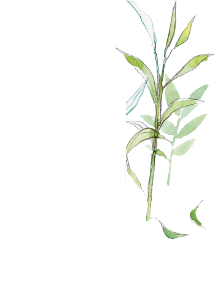
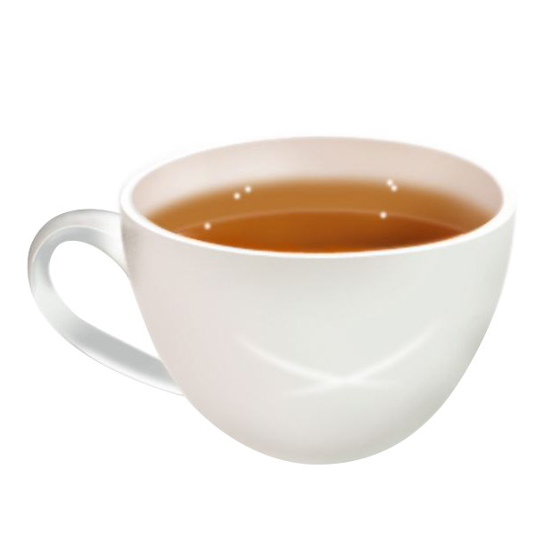
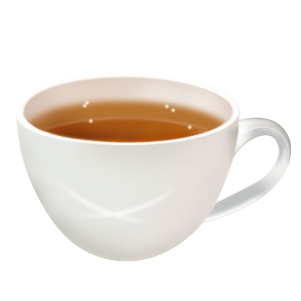
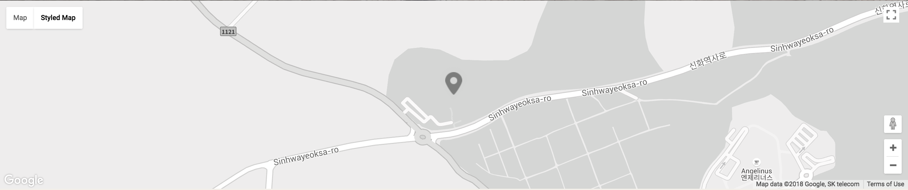

제주 오설록
제주 오설록

 
오설록은 생산에서 재배, 그리고 판매까지 한 곳에서 이루어지는 세계적으로도 손꼽히는 최대 규모의 국산 차 브랜드입니다. 오설록은 제주라는 천혜의 자연 안에서 오설록의 자연과의 상생을 통한 따뜻한 과학영농을 통해 최상의 찻잎을 얻기 위해 노력하고 있습니다.
오설록은 제주의 푸른 차밭, 차문화의 깊이를 느낄 수 있는 티스톤과 티뮤지엄, 도심 속 티하우스와 정신없이 바쁜 현대인들에게 제주 자연과 정성을 담은 차를 통해 내면을 아름답게 가꾸고 일상에 삶의 멋을 더하며, 관계를 따뜻하게 이어주는 가치있는 쉼을 선사합니다.
제주 오설록 서광 차밭과 맞닿아 있는 오설록 티뮤지엄은 아모레퍼시픽이 차와 한국 전통차 문화를 소개하고, 널리 보급하고자 2001년 9월에 개관한 국내 최초의 차 박물관입니다.
동양과 서양, 전통과 현대가 조화를 이룬 문화공간으로 차 유물관, 자연친화적인 휴식공간, 2013년 티클래스를 더해 21세기형 차 박물관으로 발돋움했습니다.
세계적인 디자인 건축 전문사이트인 ‘디자인붐’이 선정한 세계 10대 미술관에 오를만큼 안팎으로 아름다운 풍광을 뽐내는 티뮤지엄은 연간 150만 명의 관람객이 방문하는 제주 최고 명소이자 문화 공간입니다.
제주 오설록 오시는 길
제주 오설록 소개 2

자가용 이용 시
제주시/공항 > 1135번 평화로 > 동광 육거리 > 구억 방면(신화역사로) > 오설록 티뮤지엄 (50분 소요)
중문관광단지 > 1116번 극도 > 동광 육거리 > 구억 방면(신화역사로) > 오설록 티뮤지엄 (30분 소요)
한림 > 1132번 중산간 도로 > 생각하는 정원 > 유리의 성 > 오설록 티뮤지엄 (30분 소요)
대중교통 이용 시
공항 & 제주시터미널 출발
버스 150-1번, 255번 > 도청(신제주로터리) > 한라병원 > 동광환승센터 > 오설록 하차
운진항(모슬포) 출발
버스 150-1번, 255번 > 인성리 > 구억리 > NLCS제주 > 오설록 하차
서귀포 터미널 출발
버스 181번, 282번 > 중문우체국 > 창천삼거리 > 동광환승센터에서 하차 후 버스 771-1번, 771-2번, 784-1번, 820-1번, 820-2번 중 환승 - NLCS제주 - 오설록 하차
한림2리 출발
버스 784-1번 > 한림리 > 협재해변 > 저지리사무소 > 오설록 하차
버스 784-2번 > 한림리 > 협재해변 > 조수리 > 오설록 하차
제주 오설록 정보
제주 오설록 소개 3
09:00 - 19:00
제주 서귀포시 안덕면 신화역사로 15
064-794-5312~3
연중무휴 관람 무료
- 폭우, 폭설 등 기상 상태에 따라 지연 개관 및 조기 폐관할 수 있습니다.
- 관람객이 많은 휴일이나 휴가철에는 입장정원제를 실시할 수 있습니다. (대기 순서에 따라 입장)
- 박물관 내부 및 야외에 외부음식물 반입이 금지되어 있습니다.
- 애완견은 뮤지엄 내부로 데려오실 수 없습니다.